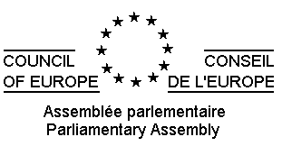

РЕЗОЛЮЦИЯ 1464 (2005) 11
1. В жизни многих европейских женщин религия продолжает играть важную роль. Фактически, независимо от того, являются ли они верующими или нет, большинство женщин в той или иной форме испытывают на себе воздействие отношения различных религиозных конфессий к женщине — как непосредственно, так и через их традиционное влияние на общество и государство.
2. Это влияние редко бывает благоприятным: права женщин часто урезаются или нарушаются во имя соблюдения религиозных догматов. Хотя большинство религий провозглашают равенство женщин и мужчин перед Богом, они предписывают им различное предназначение на земле. Поддерживаемые религией гендерные стереотипы даровали мужчинам чувство превосходства, что привело к дискриминации женщин со стороны мужчин и даже к насилию с их стороны.
3. С одной стороны, происходят вопиющие нарушения гуманитарных прав женщин — такие как преступления, связанные с «защитой чести», принуждение к вступлению в брак и нанесение увечий женским гениталиям, которые — хотя еще редко встречаются в Европе — все чаще происходят в некоторых сообществах.
4. С другой стороны, имеют место более скрытые и менее экзотические проявления нетерпимости и дискриминации, гораздо шире распространенные в Европе — и которые могут в не меньшей мере способствовать порабощению женщин — такие как отказ ставить под вопрос патриархальные устои, считающие роль жены, матери и домашней хозяйки идеалом для женщины, а также отказ предпринимать позитивные шаги в поддержку женщин (например, при выборах в парламент).
5. Все женщины, проживающие в государствах-членах Совета Европы, имеют право на равное и достойное отношение к себе во всех сферах жизни. Свобода вероисповедания не должна рассматриваться как предлог для оправдания нарушения прав женщин, будь то явного или скрытого, основанного на законе или нет, осуществляемого с формального согласия или без такового со стороны жертв — женщин.
6. Защита женщин от нарушения их прав во имя соблюдения религиозных догматов, поддержка и полное соблюдение принципов гендерного равенства является долгом государств-членов Совета Европы. Государства не должны мириться с каким-либо религиозным или культурным релятивизмом в отношении соблюдения прав женщин. Они не должны соглашаться с оправданием неравенства и дискриминации женщин по таким признакам, как физическая или биологическая дифференциация, основывающаяся на религиозных догматах или приписываемая им. Борьба с религиозными стереотипами относительно предназначения мужчин и женщин должна вестись с самого раннего возраста, в том числе в учебных заведениях.
7. Исходя из вышеизложенного Парламентская Ассамблея призывает государства-члены Совета Европы:
7.1. в полной мере защищать всех проживающих в них женщин от нарушений их прав на основе религиозных догматов или приписываемых им, путем:
7.1.11. проводить и укреплять конкретную и эффективную политику, направленную на борьбу со всеми нарушениями права женщин на жизнь, физическую неприкосновенность, свободу передвижения и свободный выбор партнера, в том числе с так называемыми «преступлениями в защиту чести», принуждению к вступлению в брак и нанесению увечий женским гениталиям, где бы и кем они ни были осуществлены, чем бы ни оправдывались и вне зависимости от наличия формального согласия жертв; это означает, что права человека ограничивают свободу вероисповедания;
7.1.22. отказаться от признания положений семейного права других государств и законов о статусе личности, базирующихся на религиозных принципах и нарушающих права женщин, прекратить их применение на собственной территории, и при необходимости пересмотреть действующие двусторонние договоры;
7.2. повсеместно бороться с нарушением прав женщин, оправдываемых религиозным или культурным релятивизмом, в том числе в таких международных организациях, как ООН, МПС и др.;
7.3. обеспечить отделение церкви от государства, необходимое для того, чтобы не допускать применения в отношении женщины религиозно мотивированных норм права и мер политики (например, касающихся семейного права, разводов и абортов);
7.4. принять все меры к тому, чтобы свобода вероисповедания и уважение к культуре и традициям не служила предлогом для оправдания нарушения прав женщин, включая принуждение малолетних девочек к соблюдению религиозных обычаев (в том числе в вопросах ношения одежды), ограничения свободы передвижения и создания препятствий к использованию средств контрацепции со стороны семьи или общества;
7.5. в тех случаях, когда в школах разрешено религиозное обучение, обеспечить проведение учебного процесса в соответствии с принципами гендерного равенства;
7.6. противостоять любым антидемократическим и выражающим неуважение к правам человека, особенно женщин, религиозным доктринам и не допускать, чтобы такие доктрины оказывали влияние на принятие политических решений;
7.7. активно пропагандировать уважение к правам женщин, их равенство и достоинство во всех сферах жизни при контактах с представителями различных религиозных конфессий и работать в интересах достижения в обществе полного гендерного равенства.
1. Обсуждение в Ассамблее 4 октября 2005 года (26-е заседание). См. док. 10670 — доклад Комиссии по равенству возможностей женщин и мужчин (докладчик — г-жа Цапфль-Хельблинг). Текст, принятый Ассамблеей 4 октября 2005 года (26-е заседание).